Stencils é uma técnica que permite utilizar texturas para controlar o modo como outras texturas se misturam.
No exemplo abaixo, utilizámos 3 texturas. A última (círculo preto sobre fundo branco) foi utilizada para controlar a sobreposição das duas primeiras.
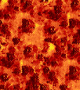 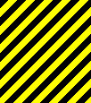 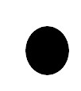 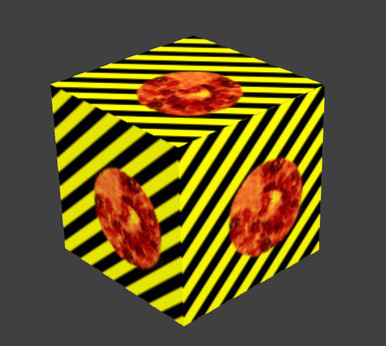As três texturas foram aplicadas com Coordinates: Generated e Projection:Cube.
A textura que serve de Stencil tem de estar inserida entre as duas restantes e ter ativadas as opções RGB to Intensity e Stencil.
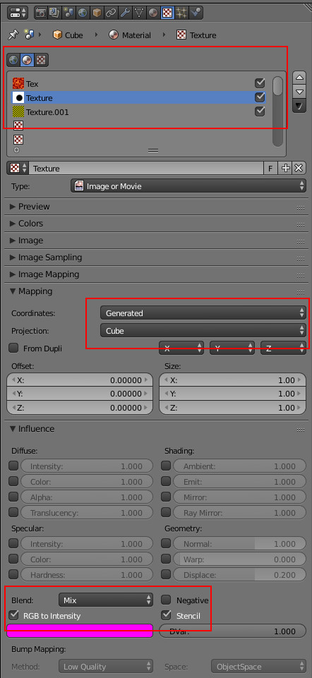E pode utilizar vários Stencils!
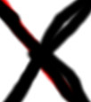 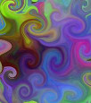 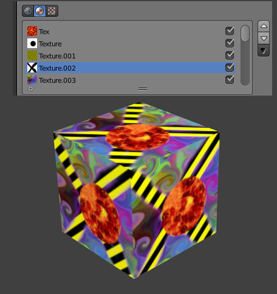Em vez de uma imagem sem movimento, pode aplicar um filme como textura...
6- Abra um novo ficheiro. Aplique uma textura ao seu cubo.
7- Escolha uma textura do tipo Image or Movie. No nosso caso, optámos por uma projecção do tipo Cube para a textura ser projectada em todos os lados. Se quiser aplicar só a uma face, terá de estar em Edit Mode e utilizar o botão Assign (ver tutorial nº 2).
O filme que utilizámos é o primeiro episódio da série “Pantera Cor-de-Rosa”.
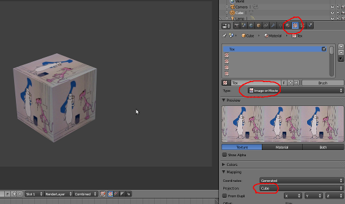8- Nas opções Image surgem alguns dados importantes como o nº de frames do filme importado que pretende utilizar, etc.
Utilize a opção Start para definir em que frame da sua animação pretende que se inicie o filme importado.
Utilize Offset para definir a frame em que começa o filme importado.
Utilize AutoRefresh para actualizar o filme importado a cada frame da sua animação.
Utilize Cyclic para que o filme importado esteja em reprodução em ciclo (i.e. chega ao seu final e recomeça).
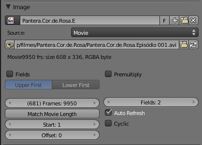Uma outra opção é animar os materiais através de keyframes.
9- Abra um novo ficheiro. Aplique um material vermelho ao seu cubo.
10- segure-se que está na frame 1. Coloque o cursor do rato em cima da cor vermelha (Diffuse) e insira uma keyframe (I). Acabou de inserir uma keyframe relativa à característica Diffuse do seu objecto.
11- Avance até à frame 25.
12- Mude a cor do seu cubo para verde. Insira uma nova keyframe (I). Atenção ao local onde tem o cursor do rato!
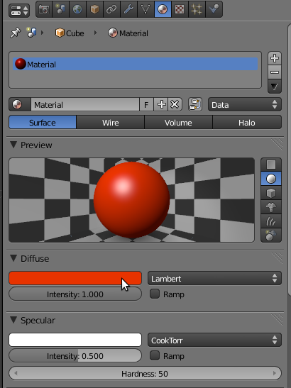13- Se fizer ALT+A irá ver o cubo a mudar de cor entre a frame 1 e a frame 25.
14- Mude para a janela Graph Editor para ver a sua animação em forma de gráfico. Para ajustar a janela e ver melhor a linhas do gráfico, clique no BMR para deslocar o painel do gráfico e em CTRL+BMR para ajustar a largura/altura do gráfico.
A linha verde vertical marca a frame onde estamos (na imagem estamos na frame 25). Clique com o BER para avançar/recuar a linha verde, avançar/recuar as frames.
Na coluna da esquerda surgem os canais de keyframes. Pode seleccionar, desactivar, esconder e bloquear canais.
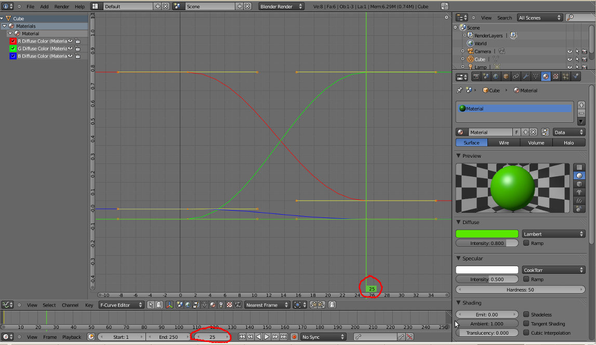15- Seleccione todas as keyframes (A) e, no menu Key, escolha outras hipóteses de interpolação, outras formas de transição entre as 2 keyframes que inseriu.
No nosso exemplo, a transição de material no cubo vai comportar-se do seguinte modo:
Bezier: cubo muda suavemente de vermelho (frame 1) para verde (frame 25) mas a velocidade não é constante, acelera lentamente no início e desacelera no final (pense num automóvel a iniciar o movimento e a parar).
Linear: cubo muda de vermelho (frame 1) para verde (frame 25) mas a velocidade constante.
Constant: cubo fica vermelho até à frame 24 e na 25 muda abruptamente para verde (pense num semáforo: desliga vermelho, liga verde)
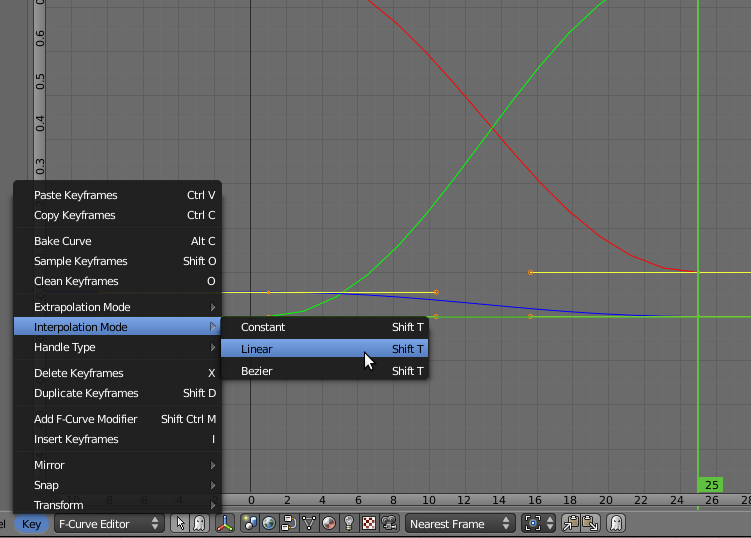